A Minecraft add-on: 8 kinds of little cars in 16 colors. That's 128 cars! Build a race track, wait for the green light, and race your brother for gold trophies.
Version 1.0.1. For Minecraft Bedrock on iPad, iPhone, Android and Windows. Free, no ads.
How to put it on the iPad
Tap Download for Minecraft above, then tap Download when Safari asks.
Open the Files app, go to Downloads, and tap BenderMiniCars.mcaddon. Minecraft opens and says Successfully imported.
If tapping the file doesn't open Minecraft, tap the Share button and choose Minecraft.
In Minecraft, tap Create New World (or the pencil next to an old world). Scroll to Behavior Packs, tap Available, tap Bender Mini Cars v1.0.1, then Activate. It works alongside the other Bender add-ons.
Tap Create or Play. The first time you join, you pick your first car and get a Car Key and a Race Track Kit.
Updating from an older version?
Minecraft keeps old copies next to new ones. The new one has its version in the name: Bender Mini Cars v1.0.1.
Download and import the new version as above.
In Minecraft, go to Settings → Storage. Under Behavior Packs, delete the old Bender Mini Cars copies (the ones without v1.0.1). Under Resource Packs, delete the old Bender Mini Cars Textures copies.
Open each world's settings and check Behavior Packs → Active. If it still shows an old copy, remove it and activate v1.0.1. When you join the world, the chat says which version is on.
The 8 cars
Each car has its own special move: tap the Car Key while you drive.
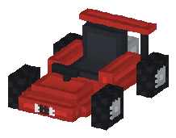
Go-Kart
★★★★☆
Turbo: a burst of speed
Small and quick
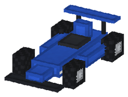
Race Car
★★★★★
Turbo: a burst of speed
The fastest car
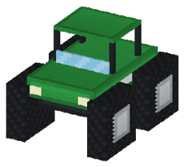
Monster Truck
★★☆☆☆
Mega Jump: a huge jump
Giant wheels, giant jumps
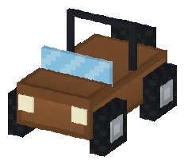
Jeep
★★★☆☆
Horn: beep beep!
Climbs over anything
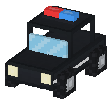
Police Car
★★★★☆
Siren and flashing lights
Quick, with a siren
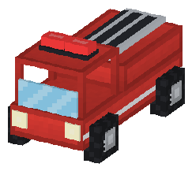
Fire Truck
★★☆☆☆
Water Spray: puts out fires
A big ladder on top
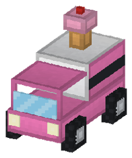
Ice-Cream Truck
★☆☆☆☆
Jingle: a tune and a treat for everyone
Plays a tune and hands out treats
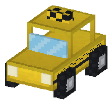
Taxi
★★★☆☆
Horn: beep beep!
Room for a friend
16 colors
When you put a car down, you pick its color. Or tap Surprise me!
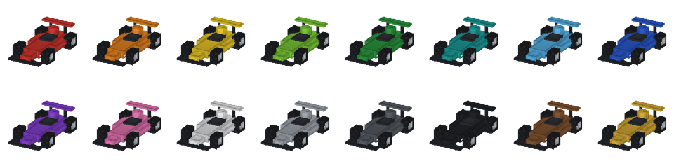
How to drive
Tap the ground with a car and pick a color. Then tap the car to get in.
Drive like a horse: look where you want to go and push forward. Hold jump to hop. Sneak to get out.
Tap the Car Key while you drive for your car's special move.
Want a new color? Stand next to the car and tap the Car Key: Paint the car next to you.
To pack a car away, hit it 3 times when nobody is in it.
The race track
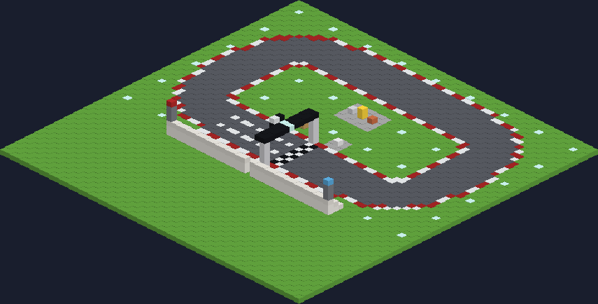
Find some open, flat land, hold the Race Track Kit and tap. A sparkly rectangle shows where it goes. Tap again to build it. Two cars are waiting on the grid!
Tap Race Control (the checkered block by the start), or tap the Car Key when you're not driving, and choose Start a race.
You have 10 seconds to get in your cars. Everyone driving on the track lines up on the grid.
Watch the lights: red, red, red... GREEN! Race 3 laps. You have to go all the way round each time: no cutting across the middle!
1st place wins a gold trophy, 2nd silver, 3rd bronze. Racing alone? Finish fast for gold. The fastest time ever is the track record.
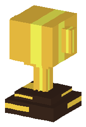
Gold
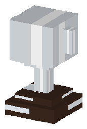
Silver
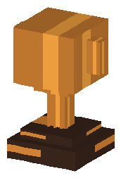
Bronze
How to craft more
All the recipes are in the crafting table's recipe book.
Any car: iron ingot, the car's special item, iron ingot over 2 blocks of coal (the wheels)
Special items: Go-Kart lever, Race Car block of redstone, Monster Truck slime block, Jeep oak log, Police Car redstone lamp, Fire Truck water bucket, Ice-Cream Truck cookie, Taxi yellow dye
Car Key: redstone and an iron ingot side by side
Race Track Kit: black and white concrete around gray concrete, checkered
Race Control: black, white, black concrete over 3 iron ingots
Race Light (×2): redstone on top of a redstone lamp
Good to know
Trophies can only be won, not crafted. Put them on a shelf to show them off!
The Race Car is the fastest, but the Go-Kart's Turbo can catch it. The Monster Truck and Jeep climb over blocks.
Cars never get damaged, and the specials never hurt anyone.
The Race Track Kit only builds in the Overworld, and not on water. Sneak and tap it twice to undo your track.